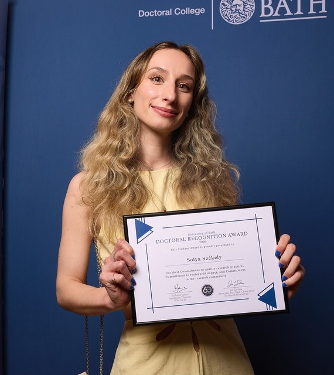

June 2026
University of Bath
Doctoral Recognition Award
Awarded in all three categories: Commitment to Quality Research Practice, Commitment to Real-World Impact, and Commitment to the Research Community.

Awarded in all three categories: Commitment to Quality Research Practice, Commitment to Real-World Impact, and Commitment to the Research Community.
Lip-hand Representational Distinctiveness after Upper-limb Amputation.
Four-year fully funded Doctoral Training Partnership studentship.
Awarded for the highest mark in the BSc Psychology dissertation project within the Department of Psychology.